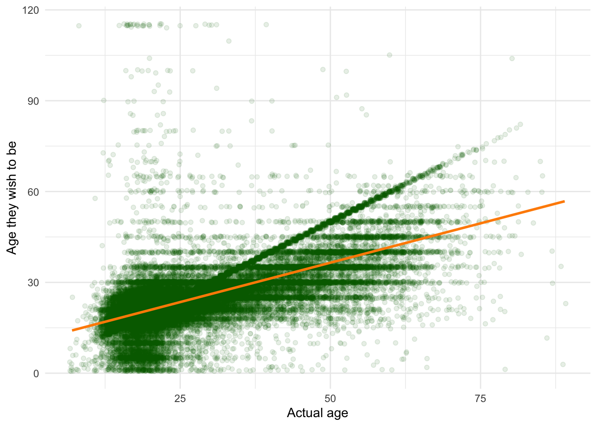
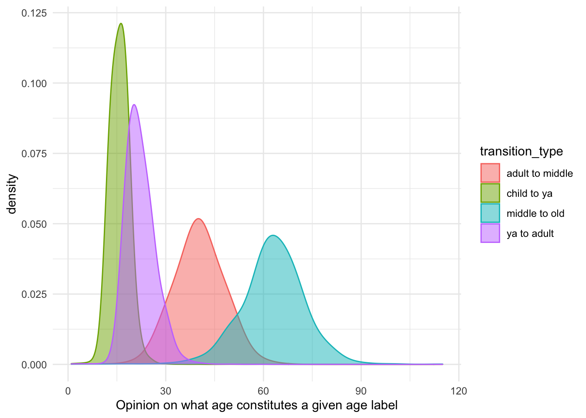
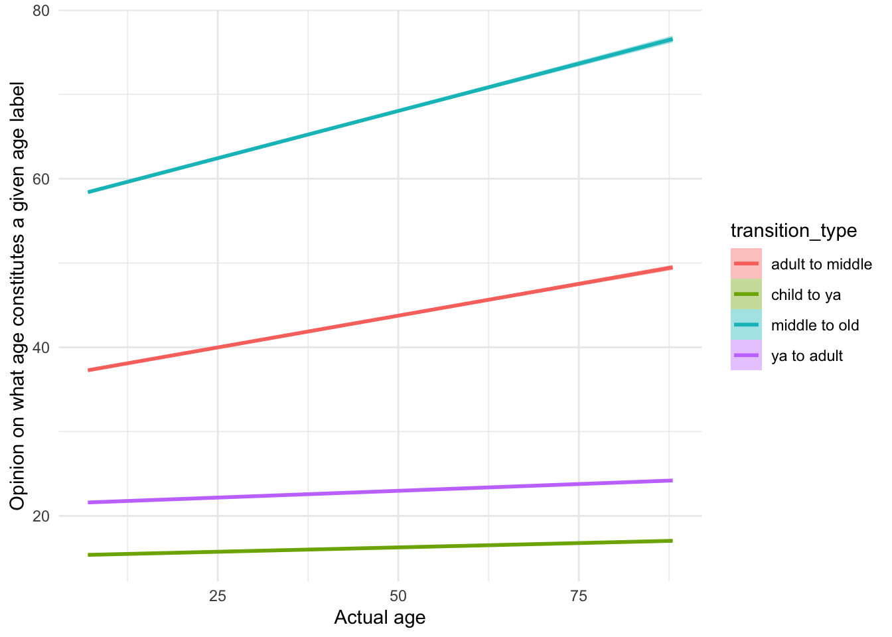

This data was collected on Project Implicit and is freely available under a CCO license on the Open Science Framework.
Specifically, I took the data from the Age related Implicit Association Test collected in 2015.
# dependencies ------------------------------------------------------------
library(tidyverse)
library(psych)
library(knitr)
library(broom)data_trimmed <- read_rds("data/data_trimmed.rds")
data_choosetobe <- read_rds("data/data_choosetobe.rds")This gives us a lot of data to answer our questions:
descriptives <- data_choosetobe %>%
select(age) %>%
describe() %>%
select(n, mean, sd)
descriptives %>%
mutate_if(is.numeric, round, digits = 2) %>%
kable()| n | mean | sd |
|---|---|---|
| 54639 | 26.78 | 12.27 |
I’ve added the usual least squared error regression line to allow us to make loose predictions from the plot.
ggplot(data = data_choosetobe) +
geom_jitter(aes(x = age, y = choosetobe), colour = "darkgreen", alpha = 0.1) +
geom_smooth(aes(x = age, y = choosetobe), method = "lm", colour = "darkorange") +
theme_minimal() +
xlab("Actual age") +
ylab("Age they wish to be")
Clearly, there are a subset of individuals who report that their ideal age is their curren age (see the thick green diagonal line of data). We’ll put aside the question of subgroups, and instead ask questions about the average individual.
A linear regression can be used to make more specific predictions.
model_1 <- lm(choosetobe ~ age,
data = data_choosetobe)
summary(model_1)##
## Call:
## lm(formula = choosetobe ~ age, data = data_choosetobe)
##
## Residuals:
## Min 1Q Median 3Q Max
## -53.786 -2.646 0.078 2.640 100.364
##
## Coefficients:
## Estimate Std. Error t value Pr(>|t|)
## (Intercept) 10.47359 0.07365 142.2 <2e-16 ***
## age 0.52036 0.00250 208.2 <2e-16 ***
## ---
## Signif. codes: 0 '***' 0.001 '**' 0.01 '*' 0.05 '.' 0.1 ' ' 1
##
## Residual standard error: 7.171 on 54637 degrees of freedom
## Multiple R-squared: 0.4423, Adjusted R-squared: 0.4423
## F-statistic: 4.333e+04 on 1 and 54637 DF, p-value: < 2.2e-16Conclusion: People want to be roughly half their age plus 10: current age * age estimate (0.52) + intercept (10.47)
# reshape age transitions data
transitions <-
data_trimmed %>%
rename(`adult to middle` = atoma, # A person moves from being an adult to middle-aged at what age?
`child to ya` = ctoya, # A person moves from being a child to being a young adult at what age?
`middle to old` = matoo, # A person moves from being middle-aged to being old at what age?
`ya to adult` = yatoa) %>%
gather(transition_type, transition_age, c(`adult to middle`, `child to ya`, `middle to old`, `ya to adult`)) %>%
mutate(transition_type = as.factor(transition_type)) %>%
filter(!is.na(transition_age), !is.na(transition_type))ggplot(transitions, aes(x = transition_age, colour = transition_type, fill = transition_type)) +
geom_density(alpha = 0.5, adjust = 5) + # try changing the kernal smoothing width via adjust.
theme_minimal() +
xlab("Opinion on what age constitutes a given age label")
Rough preictions can be made from the graph. Interestingly, there seems to be more consensus (narrower distributions) about younger age transitions than old ones.
model_2 <- lm(formula = transition_age ~ transition_type,
data = transitions)
summary(model_2)##
## Call:
## lm(formula = transition_age ~ transition_type, data = transitions)
##
## Residuals:
## Min 1Q Median 3Q Max
## -61.839 -2.839 -0.262 2.763 99.208
##
## Coefficients:
## Estimate Std. Error t value Pr(>|t|)
## (Intercept) 40.26207 0.02859 1408.4 <2e-16 ***
## transition_typechild to ya -24.47018 0.04041 -605.6 <2e-16 ***
## transition_typemiddle to old 22.57712 0.04041 558.7 <2e-16 ***
## transition_typeya to adult -18.02481 0.04042 -445.9 <2e-16 ***
## ---
## Signif. codes: 0 '***' 0.001 '**' 0.01 '*' 0.05 '.' 0.1 ' ' 1
##
## Residual standard error: 6.672 on 218106 degrees of freedom
## Multiple R-squared: 0.8823, Adjusted R-squared: 0.8823
## F-statistic: 5.451e+05 on 3 and 218106 DF, p-value: < 2.2e-16Childhood ends and young adulthood begins at 16: intercept (40) + transition_type child to young adult (-24)
Young adulthood ends and adulthood begins at 22: intercept (40) + transition_type young adult to adult (-18)
Adulthood ends and middle age beings at 40: intercept (40)
Middle age ends and old age beings at 63: intercept (40) + transition_typemiddle to old (23)
What if beliefs about age categories change as we age? More formally, is current age a moderator of beliefs about age categories?
ggplot(transitions,
aes(x = age, y = transition_age, colour = transition_type, fill = transition_type)) +
geom_smooth(method = "lm") +
theme_minimal() +
ylab("Opinion on what age constitutes a given age label") +
xlab("Actual age")
Beliefs about childhood and young adulthood are relatively stable over time. However, beliefs about middle age and old age increase with age.
model_3 <- lm(formula = transition_age ~ age * transition_type,
data = transitions)
summary(model_3)##
## Call:
## lm(formula = transition_age ~ age * transition_type, data = transitions)
##
## Residuals:
## Min 1Q Median 3Q Max
## -74.891 -3.112 -0.192 2.917 99.513
##
## Coefficients:
## Estimate Std. Error t value Pr(>|t|)
## (Intercept) 36.223551 0.066651 543.48 <2e-16 ***
## age 0.150666 0.002262 66.61 <2e-16 ***
## transition_typechild to ya -20.983960 0.094203 -222.75 <2e-16 ***
## transition_typemiddle to old 20.605071 0.094216 218.70 <2e-16 ***
## transition_typeya to adult -14.847563 0.094256 -157.52 <2e-16 ***
## age:transition_typechild to ya -0.130060 0.003197 -40.68 <2e-16 ***
## age:transition_typemiddle to old 0.073592 0.003198 23.01 <2e-16 ***
## age:transition_typeya to adult -0.118525 0.003199 -37.05 <2e-16 ***
## ---
## Signif. codes: 0 '***' 0.001 '**' 0.01 '*' 0.05 '.' 0.1 ' ' 1
##
## Residual standard error: 6.46 on 218102 degrees of freedom
## Multiple R-squared: 0.8897, Adjusted R-squared: 0.8897
## F-statistic: 2.513e+05 on 7 and 218102 DF, p-value: < 2.2e-16Again, specific predictions about estimated opinions about transition ages as a function of own age can be worked out from the table here (although are more complex in the case of interactions).